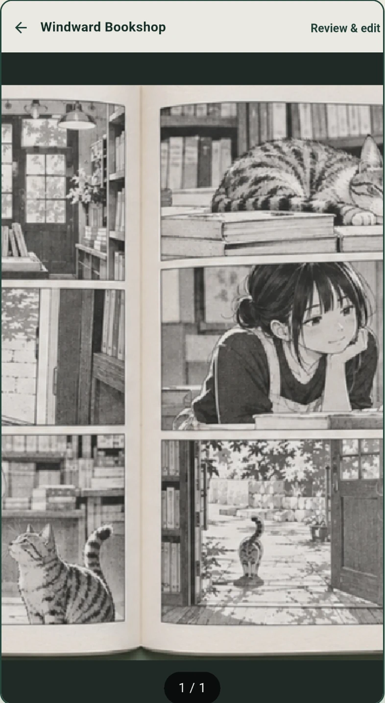
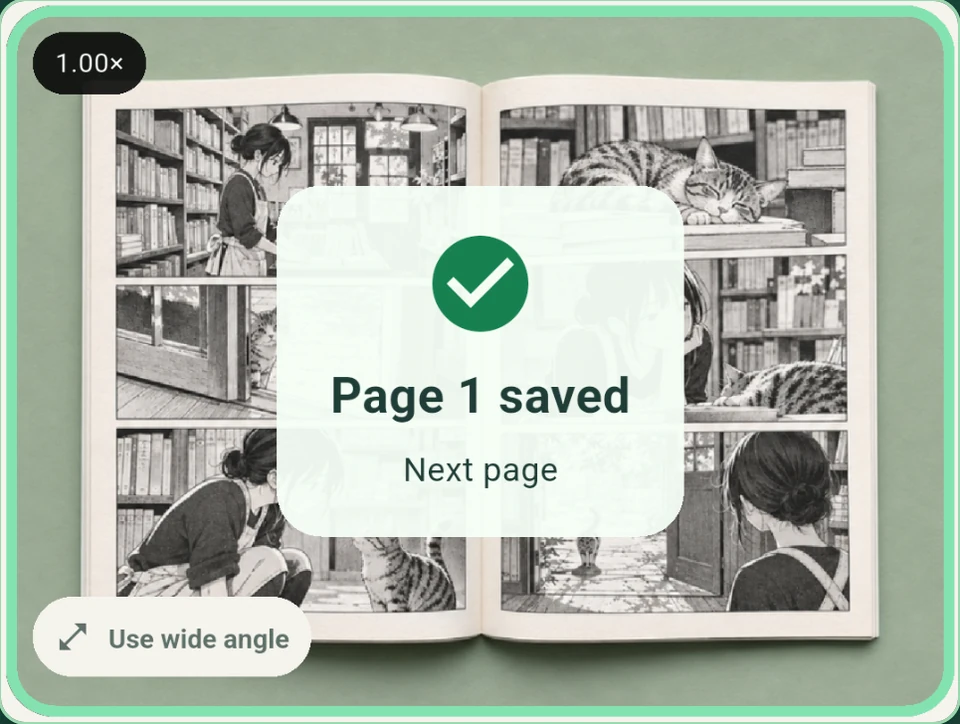
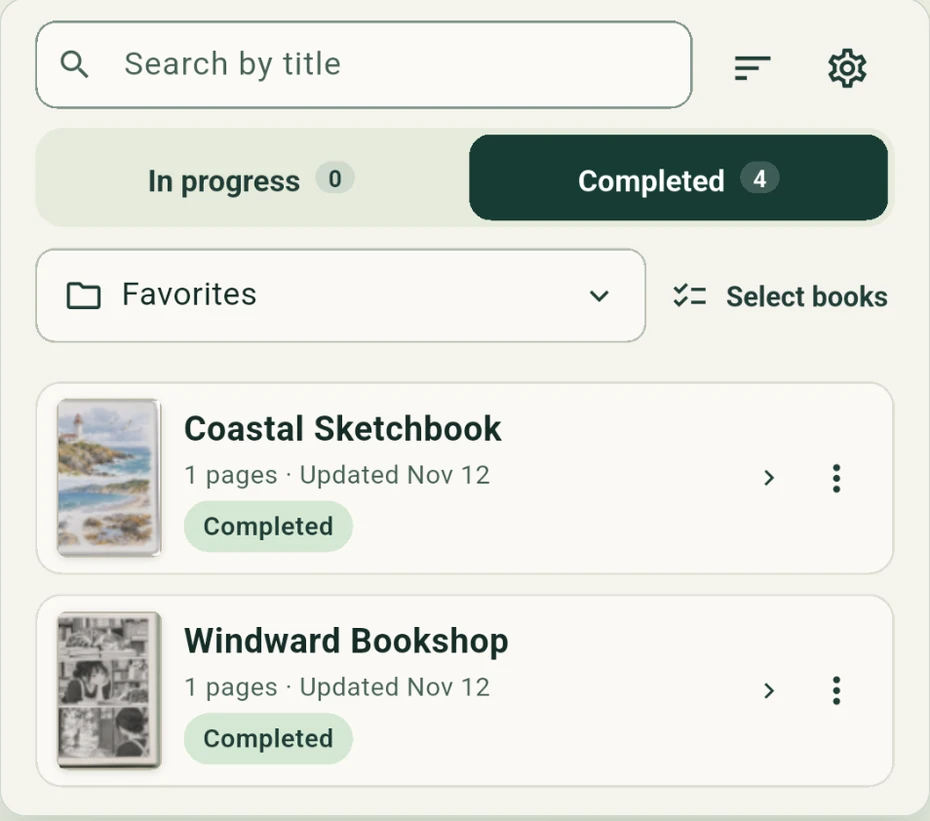

Book & manga scanner
Turn the page.Save the book.
Point your camera at an open book and turn the page.
Mekuritoru automatically captures the next spread.
Read the scanned book right on your phone.

Free for Android


Turn the page. It scans for you.
-
Fit the book in frame
Keep all four corners in view, then start auto capture.
-

Turn the page
When the saved checkmark appears, turn to the next spread.
-

Capture and save automatically
Mekuritoru captures the spread when it settles. A checkmark confirms it was saved.
Clean up pages in batches.
Crop around the pages, whiten the background outside the paper, or darken text and line art. Apply your chosen adjustments to several pages at once.


Your scanned books,
ready to read.
- Read right on your phoneSwipe to turn pages and pinch to zoom in on small text. Choose either reading direction.
- Find books by title or folderKeep books you’re still scanning in progress, and organize completed books into folders.
- Export to PDF or CBZ Export a whole book as one file and open it in a compatible reader you already use.
Common questions
Do I need to cut the book apart?
Just open the book and point your phone’s camera at it. Both facing pages can be saved as one image.
Where are the scanned images stored?
Scans are stored and edited on your device. To read on another device, export the book as a PDF or CBZ and transfer the file.
What can I scan?
You can scan the pages of printed books, manga, and magazines.
Mekuritoru
Book & manga scanner